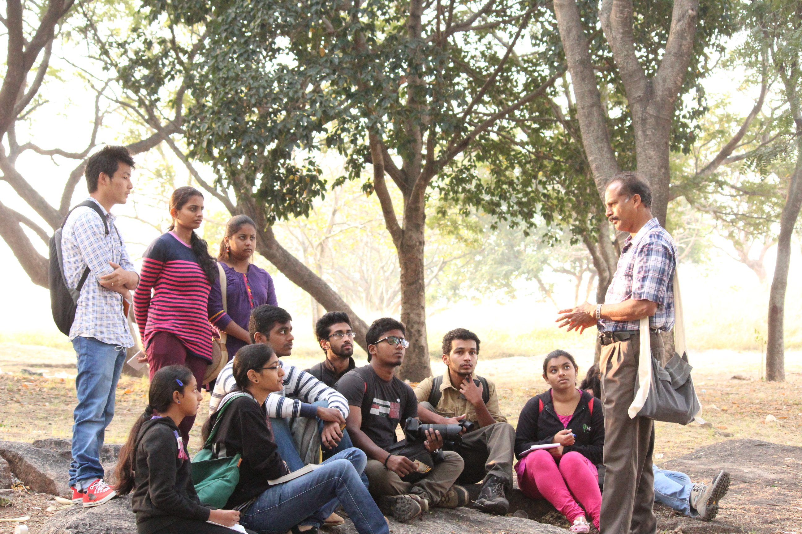

Forest Watch was founded in December,2014 by Dr P U Antony a Professor of Zoology and a conservationist who was born and brought up in Wayanad in the foot hills of Western Ghats and spent most of his life studying the flora and fauna of the prestine forests of Nilgiri Biosphere 
Objectives:
-
Forest Watch aims at organizing the following programs towards conservation and awareness creation:
- Nature camps and adventure treks for students and youth to develop their confidence, self-esteem and dignity.
- Ecological meditations and padayatras to create awareness on ecosystem services offered by forest
- Seminars and workshops for the public
- Environmental education programme for school children
- Ecology week celebrations and tree plantations.
- ‘Pulse water Campaign’- house to house campaigns to prevent wastage misuse and overuse of water at households
- Research projects
- Lake and wasteland rejuvenation